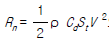

어로산업기사 (2004-05-23 기출문제)
1과목: 어구학
1. Nylon 30mm S라고 하는 표현은 다음 중 어느 것의 규격을 표시한 것인가?
- 그물실
- 줄(로프)
- 그물감
- 매듭
(정답률: 74%)

2. 같은 섬유에서 마찰에 대한 강도가 제일 약한 구조는?
- 단섬유(staple)
- 장섬유(multifilament)
- 단자사(monofilament)
- 핀꼬임 장섬유
(정답률: 88%)
3. 장력에 의한 매듭 그물감의 파단은 다음 중 어디에서 가장 먼저 일어나는가?
- 매듭내부
- 매듭과 발과의 경계
- 발의 중간
- 그물감의 최중앙
(정답률: 82%)
4. 그물실을 태웠을 때 종이 냄새가 나는 것은?
- 나일론이다.
- 면사이다.
- 폴리에틸렌이다.
- 비닐론이다.
(정답률: 85%)
5. 정치망의 길그물에 사용할 그물감으로 적당치 못한 것은?
- 물 속에서 잘보이는 색깔
- 어군이 통과 못할 작은 코
- 재료가 풍부하여 값싼 것
- 새끼나 폴리에틸렌 실을 사용
(정답률: 81%)
6. 다랑어 주낙의 모릿줄이 수중에서 이루는 형상은 다음중 어느 것에 가장 가까운가?
- 직선
- 원
- 현수곡선
- 삼각형
(정답률: 83%)
7. 유자망은 그물 높이(세로)가 크나 고정자망(부자망 저자망 등)은 높이가 작다. 고정자망의 높이를 크게 하지 못하는 이유는?
- 대상어종의 유영층이 얇기 때문
- 부력 및 침강력이 큰 것이 요구되기 때문
- 저항이 커져서 지지하기가 어려워지기 때문
- 그물이 날려 경사지기 때문
(정답률: 68%)
8. 다음에서 섀클(shackle)의 형에 속하지 않는 것은?
- G 형
- U 형
- H 형
- Ring 형
(정답률: 72%)
9. 예망 어구에서 주로 중층 트롤 어구에만 관계가 있는 것은?
- Head rope
- Spreader
- Front weight
- Flapper
(정답률: 80%)
10. 그물감의 면적이 가장 넓어지는 성형율은?
- 90%
- 80%
- 70%
- 60%
(정답률: 84%)
11. 가로, 세로의 뻗힌 길이가 각각 5m 인 망지에 60% 의 주름을 주었다. 세로의 길이는 약 몇 m 인가?
- 3.0 m
- 3.5 m
- 4.0 m
- 4.5 m
(정답률: 67%)
12. 정치망을 해중에 고정하는데 사용되는 것으로 돌이나 자갈 혹은 모래등을 자루속에 넣어서 만드는 것을 무엇이라하는가?
- 닻
- 멍
- 블록
- 발돌
(정답률: 80%)
13. 트롤 그물에서 자루입구 높이를 높이는 요소 중 맞는 것은?
- 날개 간격을 넓일 때
- 예망속도를 높일 때
- 예망속도를 낮출 때
- 발줄을 가볍게 하여 사용할 때
(정답률: 68%)
14. 걸그물(자망)의 매듭은 막매듭을 사용한다. 이것은 막매듭의 무슨 특성을 이용하고 있는가?
- 유수의 저항이 작다.
- 마찰시의 마모가 적다.
- 매듭에 요하는 실의 양이 적게 든다.
- 매듭이 밀리지 않는다.
(정답률: 80%)
15. 그물감의 침강속도를 크게 하기 위해서는 다음 중 어느 섬유로 구성하는 것이 좋은가?
- 폴리아미드
- 폴리에스터
- 폴리비닐리덴 클로라이드
- 폴리 프로필렌
(정답률: 83%)
16. 건착망 어구에서 부력 및 침강력을 결정할 때 고려할 사항 중에서 틀린 것은?
- 잉여부력이 너무 작으면 뜸이 수중에 잠겨 버린다.
- 잉여부력이 작으면 조임시 뜸이 수중에 잠긴다.
- 잉여부력이 너무 크면 파망사고가 나기 쉽다.
- 뜸의 총부력은 어구의 총 침강력의 3.0∼5.0배가 적당하다.
(정답률: 74%)
17. 끌어구류의 뜸에 요구되는 사항 중에 틀린 것은?
- 높은 수압하에서도 부력의 감소가 작을 것
- 부력이 가능한한 작을 것
- 쉽게 파손이 되지 않을 것
- 가공이 쉬울 것
(정답률: 80%)
18. 번수(Nec)법의 설명 중에서 틀린 것은?
- 무게 1파운드 되는 올의 길이가 840야드 일 때 1번수라 한다.
- 무게 453.6g 되는 올의 길이가 7681m 일 때 10번수라 한다.
- 번수의 수가 클수록 그물실 올은 가늘어진다.
- 번수법은 장섬유올에만 적용된다.
(정답률: 75%)
19. 합성섬유의 계통명 중 강도와 마찰에 강하며, 비중이 물보다 작은 것은?
- 폴리에틸렌
- 폴리아미드
- 폴리에스테르
- 폴리비닐 클로라이드
(정답률: 79%)
20. 다음 로프 중에서 쇠줄이 들어 있는 것은?
- 호사 레이드 로프 (Howser laid rope)
- 슈라우드 레이드 로프 (Shroud laid rope)
- 플레인 레이드 로프 (Plain laid rope)
- 컴파운드 로프 (Compound rope)
(정답률: 80%)
2과목: 어업기기학
21. 소너의 송· 수파기 운용장치와 관계가 없는 것은?
- 승강장치
- 선회장치
- 부각 조정장치
- 진동 방지장치
(정답률: 79%)
22. 트롤어선이 예망할 때, 끌리고 있는 전개판의 양력, 항력 및 토오크 등이 작용하는데, 이들 세 힘을 동시에 측정하는 장치는?
- 삼분력계(三分力計)
- XY 측정계
- 양각계(兩脚計)
- 토오크(torque) 변환기(變換器)
(정답률: 83%)
23. 다음 중 컬러 어군 탐지기에서 해저와 해저 부근의 어군 영상이 분리되어 나타나지 않는 경우는?
- 해저의 저질이 펄인 경우
- 대규모의 어군이 존재하는 경우
- 해저의 굴곡이 심한 경우
- 해저의 형상이 산맥으로 형성된 경우
(정답률: 70%)
24. 네트 레코더의 구성요소가 아닌 것은?
- 기록기
- 탐지 발신기
- 잠항 수파기
- 승강 선회장치
(정답률: 78%)
25. 권양 원치에서 한 기어(Gear)의 반지름 200㎜, 이빨수를 48 이라 하면 이와 맞물고 있는 기어의 반지름이 300㎜ 일때 그 이빨수는?
- 32
- 56
- 64
- 72
(정답률: 75%)
26. 어군탐지기에서 사용되는 습식기록지의 장점에 해당되는 것은?
- 증폭기가 필요 없다.
- 기록펜이 필요 없다.
- 기록이 매우 예민하다.
- 기록을 영구 보존할 수 있다.
(정답률: 73%)
27. 소너(sonar)의 종류는 서치라이트 소너(search light type sonar)와 스캔닝 소너 (scanning sonar)가 있는데, 무엇을 기준으로 하여 구분하는가?
- 수신파의 기록방식
- 수신파의 증폭방식
- 송신파의 발사방식
- 수신파의 수신방식
(정답률: 88%)
28. 어로 기계를 구동시키는데 쓸 수 있는 동력전달 방법에 유압식이 많이 이용된다. 그 가장 큰 이유는?
- 전기식보다 구조가 간단하기 때문이다.
- 유체 매개로 완충작용과 속도 조정이 가능하기 때문이다.
- 다른 동력전달 방법보다 고장이 적기 때문이다.
- 기계식보다 소음이 적게 나기 때문이다.
(정답률: 85%)
29. 트랜지스터의 전류증폭률이란 콜랙터(collecter)전압을 일정하게 하였을 때의 무엇과 무엇의 비인가?
- 콜랙터(collecter) 전류와 베이스(Base)전류의 비
- 콜랙터(collecter) 전류와 에밋터(Emitter)전류의 비
- 베이스(Base) 전류와 에밋터(Emitter)전류의 비
- 콜랙터(collecter) 전류와 에밋터(Emitter)전압의 비
(정답률: 70%)
30. 꽁치 봉수망 윈치의 권양과정에 생기는 문제점이 아닌것은?
- 권양속도는 줄을 감는량에 따라 증가한다.
- 갑판상의 많은 와이어 줄로 위험하다.
- 돋움줄을 사용하므로 마찰계수가 증가한다.
- 중앙집중식 권양방식으로 개량을 요한다.
(정답률: 84%)
31. 어군탐지기의 기록기구 방식에 해당되는 것은?
- Belt type
- chain type
- C.R.T type
- Relay type
(정답률: 66%)
32. 트롤어구의 예망저항은

으로 표시된다. 다음 중 맞는 것은?- ρ 는 그물의 축소율이다.
- Cd 는 어구의 전개면적 계수이다.
- St 는 흐름 방향에 대한 입구의 투영 면적이다.
- V2 는 어선의 저항 계수이다.
(정답률: 83%)
33. 시간적으로 변하지 않는 입력신호에 대한 계측계의 출력신호의 특성을 무엇이라 하는가?
- 정특성(靜特性)
- 부동신호(不動信號)
- 고정특성(固定特性)
- 직진특성(直進特性)
(정답률: 61%)
34. 어업기기의 분류중 어업기계류에 속하는 것은?
- 양망기
- 망심계
- 무선부표
- 수중송수상기
(정답률: 82%)
35. 수중 음속은 주로 다음 어느 것에 의해서 좌우되는가?
- 산소, pH, 투명도
- 수심, 수온, 염분
- 수색, 탁도, 유속
- 농도, 전기전도도, 유향
(정답률: 80%)
36. 네트 레코더를 사용하여 그 효과를 크게 올릴수 있는 어업은?
- 유자망어업
- 들그물어업
- 트롤어업
- 건착망어업
(정답률: 75%)
37. 전개판 감시 장치(otter graph)의 송ㆍ수파기 부착 위치는?
- 선미 갤로우스
- 톱 롤러(top roller)
- 전개판(otter board)
- 트롤 윈치(trawl winch)
(정답률: 87%)
38. 인력을 동력단위로 환산할 때는 연속작업이 가능한 힘을 기준으로 한다. 그 기준은 몇 kg· m/sec인가?
- 6
- 12
- 15
- 20
(정답률: 71%)
39. 초음파의 특징을 설명한 것 중 틀린 것은?
- 에너지의 분산이 적다.
- 전파속도는 가청 음파보다 빠르다.
- 지향성이 있다.
- 수중의 여러잡음에 방해되지 않는다.
(정답률: 62%)
40. 회전 양망판(Turn table) 을 사용하는 양망 방법은 어떤 어구에 적용되어 왔는가?
- 트로올
- 저인망
- 정치망
- 선망
(정답률: 82%)
3과목: 어장학
41. 다음 중 어장 성립과 관계가 가장 깊은 것은?
- 어획하는 대상어종이 매우 다양해야 한다.
- 어류가 무리를 이루고만 있으면 된다.
- 잡는 어류가 현재에는 유용성이 없어도 좋다.
- 어류가 무리를 이루고 있는 것을 어획 할 수 있어야 한다.
(정답률: 85%)
42. 다음 중 우리 나라 동해의 해황과 오징어 어장 형성과의 관계에서 어황이 좋을 때는?
- 냉수괴가 연안에 접근하여 남북으로 뻗고 난류의 북상 세력이 약한 때
- 냉수괴의 남하 세력이 강하여 난류의 주류가 원해로 밀려 나갈 때
- 한류 세력이 너무 약하고 난류 세력이 강하여 적수온 대가 중층 이하까지 발달할 때
- 한난 양류의 세력이 균형되어 조경이 연안 가까이에 남북으로 형성될 때
(정답률: 72%)
43. 다음 어종 중 동해에서 어획되지 않는 것은?
- 오징어
- 명태
- 꽁치
- 조기
(정답률: 62%)
44. 다음 중 저서 어류의 주 먹이가 되는 것은?
- 유영동물(Nekton)
- 저서동물(Benthos)
- 동물성 플랑크톤(Zooplankton)
- 식물성 플랑크톤(Phytoplankton)
(정답률: 79%)
45. 우리나라의 남해안에서 쓰시마 난류와 남해안 연안수와의 사이에 형성되는 조경역에서 가장 많이 잡히는 어류는?
- 명태, 대구
- 고등어, 정어리
- 오징어, 도루묵
- 조기, 민어
(정답률: 72%)
46. 여름철에 가장 비를 잘 내리게 하는 구름은?
- 난층운
- 고층운
- 권운
- 적란운
(정답률: 80%)
47. 태풍은 다음 중 어떤 것이 발달한 것인가?
- 온대성 저기압
- 열대성 저기압
- 지형성 저기압
- 이동성 고기압
(정답률: 70%)
48. 꽁치의 생태적 특징이다. 옳지 못한 것은?
- 추광성이 약하나 산란기에 특히 강하다.
- 군집성이 강하다.
- 산란기에 물체에 대한 주성이 강하다.
- 전형적인 표층어이다.
(정답률: 73%)
49. 생태계에서 대양구의 생산층 이하 수층은?
- 자급 영양적 생태계
- 보급 영양적 생태계
- 보상 심도 생태계
- 영양 생태계
(정답률: 66%)
50. 다음 중에 용승이 일어날 때 나타나는 주 현상인 것은?
- 표면 수온이 높아진다.
- 식물성 플랑크톤의 증가
- 탁도가 커진다.
- 영양염류의 결핍 현상이 일어난다.
(정답률: 71%)
51. 병에 채수를 할 때 가장 먼저 하여야 할 것은?
- pH 측정
- 산소량 측정
- 염분 측정
- plankton 측정
(정답률: 77%)
52. 티-에스 도표(T-S diagrom)와 관련이 가장 먼 것은?
- 수괴분석
- 적조발생해역 검출
- 해수의 안정도 판단
- 해양관측의 오차 검출
(정답률: 74%)
53. 일반적으로 항구의 조석주기는 평균 얼마인가?
- 6시간 25분
- 12시간 25분
- 24시간 25분
- 18시간 25분
(정답률: 76%)
54. 조경 어장 형성의 원리를 설명한 것 중 잘못된 것은?
- 와동이 형성되며, 수렴역과 발산역이 존재한다.
- 조경은 환경의 장벽 역할을 한다.
- 발산역에서는 플랑크톤 등 영양염의 농밀한 집결 현상이 나타난다.
- 조경의 와동은 양 수괴의 수온차가 클수록 커진다.
(정답률: 62%)
55. 대륙붕이 좋은 어장이 되는 것을 설명한 것 중 잘못된 것은?
- 육지에서 하천수 또는 기타에 의하여 각종의 영양염이 많이 유입되기 때문이다.
- 수심이 비교적 낮아서 태양광선이 해저에까지 잘 투입되기 때문이다.
- 식물성 플랑크톤과 동물성 플랑크톤이 많이 발생되기 때문이다.
- 한· 난 양류가 교차하여 전선을 형성하기 때문이다.
(정답률: 70%)
56. 다랑어류의 생태와 습성에 관한 설명 중 옳지 못한 것은 ?
- 대부분 난류성으로 난류를 타고 대규모 회유를 한다.
- 먹이는 전형적인 동물성 플랑크톤 포식어이다.
- 서식수심은 그 범위가 넓어서 어떤 때는 표면 가까이도 있으나 때로는 수심 300 - 400m 까지 이른다.
- 산란, 번식이 행해지는 곳은 위도가 30° 보다 저위도인 수역이다.
(정답률: 71%)
57. 수온변화가 어류에게 직접 영향을 미치는 사항이 아닌것은?
- 회유로 변경
- 발생
- 유영 속도
- 색이율
(정답률: 66%)
58. 다음의 해류 중 중· 저층류에 속하는 것은?
- 쿠로시오
- 크롬웰 해류
- 카나리 해류
- 걸프 스트림
(정답률: 66%)
59. 엘리뇨 현상과 가장 관계가 깊은 것은?
- 쿠로시오
- 걸프 스트림
- 남북적도류
- 북적도반류
(정답률: 63%)
60. 다음 중 자망 어업에 있어서 최대의 어획이 이루어질 수있는 조건은?
- 맑은 날 주간
- 흐린 날 주간
- 맑은 날 야간
- 그름이 낀 그믐밤
(정답률: 73%)
4과목: 어법학
61. 외두리 및 쌍두리 건착망 어법의 비교에 관하여 바르게 설명한 것은?
- 외두리식이 보다 쉽게 어군을 포위할 수 있다.
- 나쁜 해황일 때 쌍두리식에 조업이 안전하다.
- 쌍두리식이 어선의 대형화가 쉽다.
- 외두리식이 조류나 바람의 영향을 많이 받는다.
(정답률: 68%)
62. 꽁치의 주광성에 관한 설명 중 올바르지 못한 것은?
- 섭이량이 작을수록 주광성이 크다.
- 산란군이 주광성이 약하다.
- 생식소의 숙도가 미숙일수록 주광성이 크다.
- 달빛은 집어효과를 증가시킨다.
(정답률: 82%)
63. 라디오 부이(radio buoy)를 많이 사용하는 어업은?
- 기선선망
- 정치망
- 다랑어 주낚
- 가다랑어 채낚기
(정답률: 61%)
64. 권현망 어구에서 어군이 아래쪽으로 도피하는 것을 방지하기 위하여 있는 것은?
- 문턱
- 앞창
- 호장
- 고깔
(정답률: 84%)
65. 외두리 건착망의 장점이 아닌 것은?
- 투.양망 시간의 단축
- 외해나 원거리에서 조업 가능
- 어로장치의 기계화로 인력 감소
- 조업의 연속성
(정답률: 47%)
66. 중층 트롤어구에서 사용하는 전개판의 예행점의 위치에 관한 설명 중 옳지 않은 것은?
- 자루입구는 수평뿐아니라 수직으로도 충분히 깊어야 한다
- 자루입구의 밑변이 윗변과 같이 나오거나 더 나오는 것이 좋다.
- 어구는 유수저항이 작고 물의 혼란, 잡음 진동 등이 적어야 한다.
- 일정한 예망력으로는 그물을 크게 하는것 보다 예망 속도가 빠른 것이 좋다.
(정답률: 70%)
67. 방어 정치망에서 길그물의 부설과 어군의 반응에 관한 설명 중 올바르지 못한 것은?
- 어초는 될수 있는한 길그물 후면에 둘 것
- 길그물의 전방은 펄, 모래로 해저가 어둡고 후면은 밝은 곳
- 길그물의 부설 방향과 등심선과 이루는 각도는 90° 이상 130-140° 가 좋다.
- 길그물은 가능한 해안선에 평행하게 설치할 것
(정답률: 58%)
68. 다랑어 주낙어구에서 낚시는 다음 중 어느 부분과 연결되는가?
- 모릿줄
- 웃아리
- 중간아리
- 목아리
(정답률: 50%)
69. 다음 안강망 어법에 관한 내용 중 바르게 설명된 것은?
- 조류가 빠른곳에서 조업한다.
- 유도함정어법에 속한다.
- 어구를 예인하면서 조업하기도 한다.
- 주로 중층성 어족을 어획한다.
(정답률: 79%)
70. 정치망은 구조 현상 조작 조건등 여러갈래로 분류할 수있다. 그 중 가장 발달한 어구는?
- 대부망
- 낙망
- 승망
- 장망
(정답률: 75%)
71. 평판형 전개판의 최대 유효 진행 각도로 가장 적절한 것은?
- 25°
- 35°
- 45°
- 55°
(정답률: 75%)
72. 기선 권현망의 자루그물에 가장 많이 쓰이는 망지는?
- 결절망지
- 관통망지
- 여자망지
- 라셸망지
(정답률: 84%)
73. 안강망 어업의 주 조업시기는?
- 대조를 중심으로 전후 약 10일간
- 소조를 중심으로 전후 약 10일간
- 대조 직후부터 약 10일간
- 소조 직후부터 약 10일간
(정답률: 62%)
74. 안강망 어법의 개량식 어구에 해당되는 것은?
- 어구를 전개시키기 위하여 수해가 있다.
- 어구를 전개시키기 위하여 암해가 있다.
- 아궁이의 양옆에 범포가 붙여 있다.
- 아궁이의 상하변에 뜸줄과 발줄이 없다.
(정답률: 80%)
75. 정치망에서 적절한 멍의 고정계수를 위한 멍줄의 길이는 수심의 몇배 정도가 적절한가?
- 1.5 - 2배
- 2 - 2.5배
- 2.5 - 3배
- 3 - 3.5배
(정답률: 71%)
76. 다음 기선저인망 어법에서 양선 간격과 갯대 간격에 관한 내용 중 틀린 것은?
- 갯대 간격이 넓어지면 그물아궁이는 낮아진다.
- 갯대 간격이 너무 넓어지면 어구전체의 저항이 증가한다.
- 갯대 간격이 좁을수록 아궁이는 계속 높아진다.
- 양선 간격은 갯대 간격의 10배 정도가 무난하다.
(정답률: 56%)
77. 다랑어 주낚용 미끼가 아닌 것은?
- 꽁치
- 고등어
- 오징어
- 멸치
(정답률: 65%)
78. 트로올(Trawl)에 사용하는 전개판(Otter board)의 형에 속하지 않는 것은?
- 로우러형
- 평판형
- 타원형
- 만곡형
(정답률: 73%)
79. 유자망 어법에서 어군의 진행방향을 알 수 없을 때의 투망 방향은?
- 조류방향에 평행
- 조류방향에 수직
- 풍향에 평행
- 풍향에 수직
(정답률: 75%)
80. 대상어종의 후각과 관계가 있는 어업은?
- 멸치 권현망 어업
- 오징어 채낚기 어업
- 꽁치 자망 어업
- 붕장어 통발 어업
(정답률: 83%)